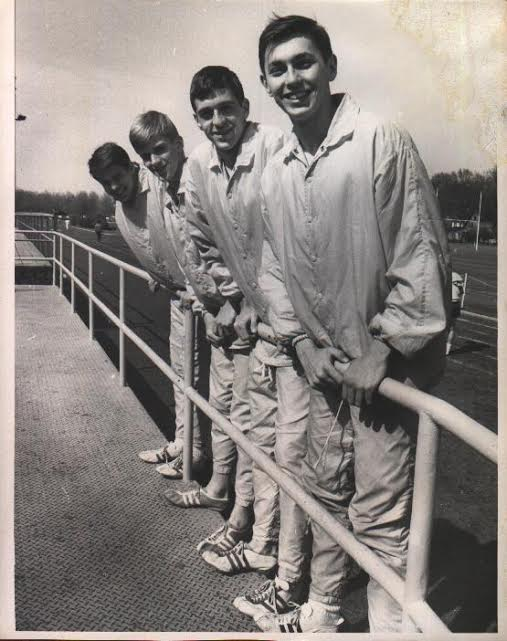
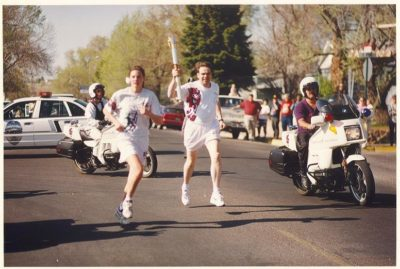
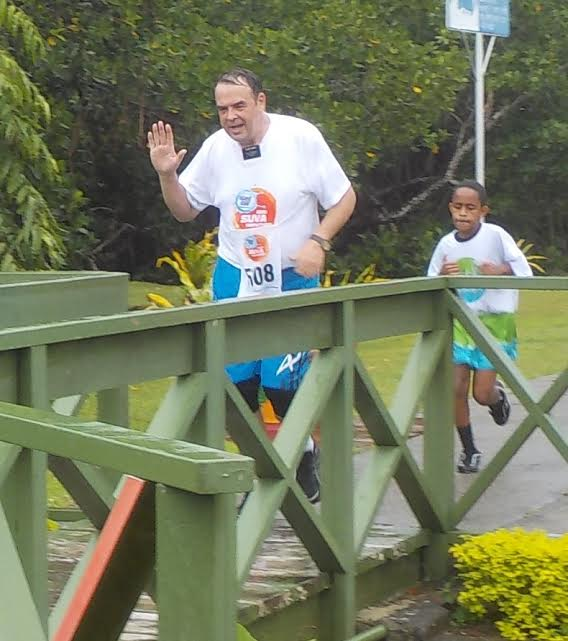

Member Spotlight: Robert Smith
By Harris Goldstein | August 2, 2020
 This edition of our AfterShokz Member Spotlight features Charity Miles member Robert Smith! The Ohio native has completed many marathons to date and at nearly 70 years of age he hasn't slowed down! Check it out!
Robert’s running journey began over 6 decades ago in the Cleveland suburb where he grew up. “I probably got my start in running from constantly rushing up and down the stairs of our home. In high school I wanted to both contribute to our school ‘spirt’ as well as distinguish myself from the 900 or so others in my class year. Joining a sports team seemed a good way to do that and track & cross country also seemed like a good idea as they provided a means for a person to push their limits without having an opponent trying to bash your head in or twist your arms off.
“Despite my inclination for shorter distances, our coach quickly determined my abilities were better suited to the ‘longer’ ones. Back then the longest race was 2 miles, but I also participated in the 2-mile relay. In my senior year our squad was considered 2nd in Ohio.”
Robert would go on to attend Miami University in Oxford, Ohio. “I didn’t participate in college sports. I did, however, do quite a bit of ‘hustling’ during my military training after college and graduate school. In fact, I’m fairly confident I can pinpoint the original source of the damage I eventually discovered I had in both knees to the rather stony ground at Fort Knox, Kentucky.”
“Despite the newly discovered pain in my knees, I still tried to keep up with occasional runs. But it wasn’t until I finally tore out my right knee, when I was over 30, that I resorted to surgery. The accepted surgical approach to a torn meniscus at that time was removal. It wasn’t many years later when they decided this was probably not the best approach. Certainly, it was too late for anyone to try to put mine back in anyway. The best solution or not, I was again able to participate in longer runs. But the doctor doing the ‘follow up’ on me was a bit surprised when he found out I did a 10k just a couple of weeks after he finished cutting me open.
“After enjoying being able to do a bit more running than previously, starting a family, and eventually moving to Indiana, I again recalled a youthful ambition to someday complete a marathon. Just to compete in and actually finish one – no expectations of any glory. This desire also forced me to realize that if I really expected to finish 26.2 miles, I needed to ‘up the ante’ in miles. I was finally able to do just that.
“My first marathon was called the Sunburst Marathon in South Bend, Indiana. It started at Notre Dame and ended in their football stadium.” After his first marathon Robert was hooked, completing 4 more marathons over the next 8 years.
 Robert’s Olympic moment came in 1996 when his wife decided to submit his name in hopes of being selected to participate in the torch relay. “My wife always knew of my fascination with the Olympics, to the point that I bought a ticket to the start of the Marathon in the Los Angeles games even though we were living in Tucson, AZ at the time. In 1996 she submitted my name as a ‘Community Hero’ to be considered for a spot on the Torch Relay for the Atlanta Games. Much to my astonishment, I was selected! So I did get some small taste of Olympic Glory.
“I did my last full marathon in 1997 in Deseret News, Salt Lake City. By then the time required for training, the wear on my joints, and the fact that I would probably never again be able to finish within the 5-hour limit most events required convinced me to limit myself to half marathons.”
17 years later Robert and his wife decided to embark on an adventure when they applied for missionary service on a small island nation across the world. “In 2014, having been retired for about 3 years, my wife and I submitted our names for missionary service and we were selected to provide ‘Member and Leader Support’ in Fiji. ‘Member and Leader Support’ basically means ‘do whatever is needed’ and we soon found ourselves in the more remote areas of the main island, Viti Levu.”
Robert typically supports Charity: Water as the topic of clean water is close to his heart. “During our year and a half in Fiji we had to either buy bottled water or triple filter it before drinking. One of the activities provided by our church was to help villages submit the paperwork needed to acquire and install 5,000-liter tanks, essentially establishing the supply for an entire village.”
“During one of our visits to the Mission Home located in the capital city of Suva, I was greatly surprised to see a billboard advertising the Suva Marathon. I was further surprised when our Mission President gave me permission to do some limited preparation and then participate in this event. On the plus side, we knew of an unfrequented beach where I could do a couple of miles before needing to turn around. On the minus, my wife insisted that I only do the 10k since I really hadn’t much time to get ready.” Robert ultimately completed the 10k, despite rainy and overcast conditions, an impressive feat considered his limited training period.
“Once we returned to the U.S. and got re-accustomed to a variety of things – like driving on the right and grocery stores that were larger than entire villages – my daughter told me about a ‘virtual running club’ she’d discovered called the Potterhead Running Club. Through them I found out about Charity Miles. What is there not to like? I run, you donate. Are there other apps? Probably. But if you have something that works well for you, why change?”
 What’s next for Robert? “I now try to be in good enough shape to participate in about three half marathons per summer. I have two I like, one in June (Teton Dam Run in Rexburg, Idaho) and one in October (Hayden Lake). In between I’ve tried others, depending on what is available and at what time. A couple of years ago I even tried a sprint triathlon. It was interesting, but the swimming portion proved to be a bit of a challenge for me.
“My usual training route is several blocks around the residential area where I live. This measures 3 and a third miles and only includes two intersections that might be considered busy. Another plus is that all dogs in the area are – usually – safely indoors or behind fences! When I’m up to three loops at a run I know I’m pretty much ready to finish 13.1.
“About ten years ago a nice doctor took an x-ray of my knees, pointed out the lack of any insulation in the joints and said, “You need to stop running. Maybe switch to swimming.” Well, I enjoy running. I like the exercise, the time to think, being outside, and the endorphins. Being tired later on isn’t too bad, and it’s fun to later drive around town and think, “I went further than this this morning”. Anyway, I decided to ignore the good doctor’s advice and just keep going until the pain he warned me about finally shows up. Because, I figure if I ever really DID stop, I would soon discover I would not be able to run at all anymore. And like I said, at nearly 70, I’m still waiting.”
We love your passion Robert! Your missionary work is admirable and your spirit is amazing. Keep up the great work and never stop running!